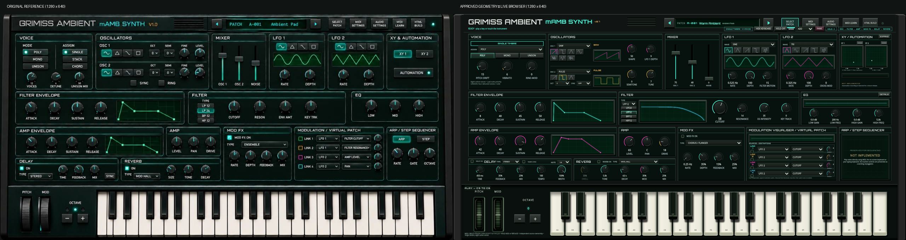
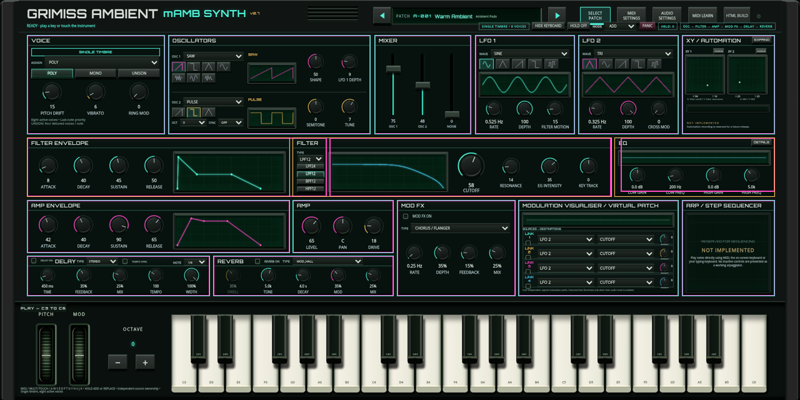
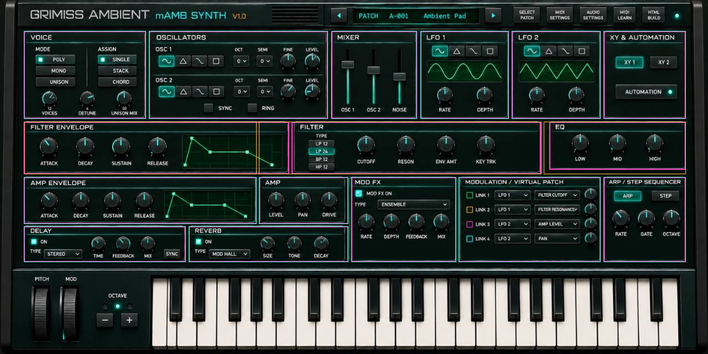

Measured original reference versus the actual browser implementation at equal 2:1 scale. Magenta: original boundaries. Teal: implemented boundaries. Amber: user-approved envelope/filter/EQ amendments. Native reference edge uncertainty ±2 pixels.



Filter and amp ADSR widths:420px. Filter:510px. EQ:256×94px. Cutoff:50px versus32px adjacent controls. Additional controls remain: compact EQ overview with original-node details, both XY pads with original-node expansion. The user subsequently requested three octaves filling the housing. The live keyboard now spans C3–C6 (37 notes), with no blank end areas.
1920 keyboard visible · 1920 keyboard hidden · 1600 visible · 1600 hidden · Cutoff · EQ details